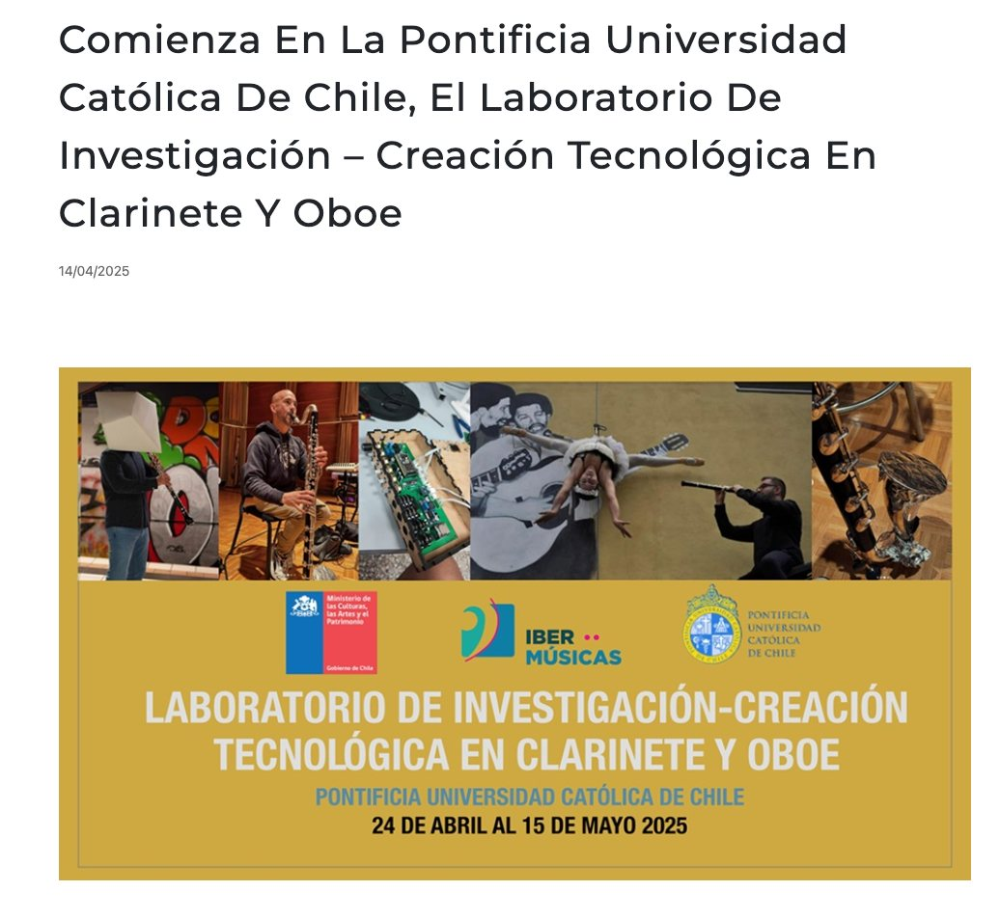

Rodrigo F. Cádiz
ProfessorProfesor
Full Professor across two faculties (music and engineering) since 2006Profesor Titular en dos facultades (música e ingeniería) desde 2006
Rodrigo F. Cádiz
Full Professor across two faculties (music and engineering) since 2006Profesor Titular en dos facultades (música e ingeniería) desde 2006
Courses in composition, electroacoustic technique, sound synthesis and processing, psychoacoustics, digital signal processing and the physics of sound, in Chile and in the United States. Nineteen supervised theses in arts, engineering, physics and computer science.
Cursos de composición, técnica electroacústica, síntesis y procesamiento de sonido, psicoacústica, procesamiento digital de señales y física del sonido, en Chile y en Estados Unidos. Diecinueve tesis dirigidas en artes, ingeniería, física y computación.
PositionsCargos
Pontificia Universidad Católica de Chile, on the faculty since 2006. One of very few academics in the country appointed jointly in an arts and an engineering unit.Pontificia Universidad Católica de Chile, académico desde 2006. Uno de los muy pocos académicos del país con nombramiento conjunto en una unidad de artes y una de ingeniería.
Member of the design team of the country's first doctorate in arts from its beginnings in 2008, a pioneering programme in Chile for incorporating artistic practice into doctoral study. Director between 2013 and 2017, when he obtained the programme's first accreditation before the National Accreditation Commission.Miembro del equipo de diseño del primer doctorado en artes del país desde sus inicios en 2008, un programa pionero en Chile por incorporar la práctica artística en un programa doctoral. Director entre 2013 y 2017, período en que obtuvo la primera acreditación del programa ante la Comisión Nacional de Acreditación.
2018, at CCRMA and the Center for Latin American Studies, on an Edward Larocque Tinker Foundation fellowship, and composer in residence with the Stanford Laptop Orchestra. The stay led to the founding of CreativAI Lab UC.2018, en CCRMA y en el Center for Latin American Studies, con una beca de la Edward Larocque Tinker Foundation, y compositor en residencia de la Stanford Laptop Orchestra. La estadía dio origen a la fundación del CreativAI Lab UC.
Ghent, Belgium, 2024, a leading world centre for artistic research in music. Two projects in technological musical archaeology: Stockhausen's MODUL 69 B ring modulator, built for Mantra in 1970, and the COMDASUAR, the computer designed and built by José Vicente Asuar in the late 1970s.Gante, Bélgica, 2024, centro líder mundial en investigación artística en música. Dos proyectos de arqueología musical tecnológica: el modulador en anillo MODUL 69 B de Stockhausen, construido para Mantra en 1970, y el COMDASUAR, el computador que diseñó y fabricó José Vicente Asuar a fines de los setenta.
Courses taughtCursos dictados
Composition · Electroacoustic composition techniques · Sound synthesis and processing · Analysis of electroacoustic music · Introduction to music, science and technology · Interactive art workshop · Psychoacoustics · Introduction to electrical engineering · Signals and systems · Digital signal processing · Advanced signal processing · Digital systems · Physics of soundComposición · Técnicas de composición electroacústica · Síntesis y procesamiento de sonidos · Análisis de música electroacústica · Introducción a la música, ciencia y tecnología · Taller de arte interactivo · Psicoacústica · Introducción a la ingeniería eléctrica · Señales y sistemas · Procesamiento digital de señales · Procesamiento avanzado de señales · Sistemas digitales · Física del sonido
TextbookLibro de texto
A computer music textbook, published free and online, used as a reference in higher education institutions across the Spanish speaking region.Un libro de música computacional, publicado de forma gratuita y en línea, usado como referencia en instituciones de educación superior de la región hispanohablante.
Supervised thesesTesis dirigidas
Laboratories and programmesLaboratorios y programas
Conceived and run with composer Miguel Farías in April and May 2025 at the Universidad Católica: three weeks of intensive work with international composers, performers and researchers exploring interfaces, sensors and new technologies for clarinet and oboe, ending in prototypes, new works, a concert and a recording.Concebido e implementado junto al compositor Miguel Farías en abril y mayo de 2025 en la Universidad Católica: tres semanas de trabajo intensivo con compositores, intérpretes e investigadores internacionales explorando interfaces, sensores y nuevas tecnologías para clarinete y oboe, con prototipos, obras nuevas, un concierto y una grabación.

Co founded on his return from the Stanford sabbatical in 2018. The only laboratory in the country devoted to generative models for music, bringing together faculty from the School of Engineering and students at every level.Co fundado a su regreso del sabático en Stanford, en 2018. El único laboratorio del país dedicado a los modelos generativos para música, que reúne a profesores de la Escuela de Ingeniería y a estudiantes de todos los niveles.
The laptop orchestra of the Universidad Católica, directed by Rodrigo F. Cádiz and created with support from Impacto UC.La orquesta de laptops de la Universidad Católica, dirigida por Rodrigo F. Cádiz y creada con apoyo de Impacto UC.